~CFARE TE VIZITOJME NE TIRANE~
~ Ish Vila Enver Hoxhes ~
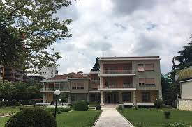
Vila ku ka jetuar ish diktatori komunist Enver Hoxha eshte nje ndertim i periudhes se komunizmit. Shtepia ndodhet ne zonen e Ish Bllokut. Ajo ka qene nje objekt i paprekshem,tabu, dhe i veshur me mister ne kohen e diktatures komuniste.
ADRESA: Rr.Ismail Qemali
~ Shtepia me Gjethe ~
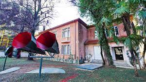
Ndertuar ne vititn 1931, fillimisht ka funksionuar si klinike obstetrike. Gjate Luftes se Dyte Boterore, nen pushtimin Gjerman, i perkiste Gestapo-s. Ne vitet e para te pasluftes, kjo shtepi u perdor si qender hetuesie, pra dhe si vend ku beheshin tortura, dhe ka qendruar si e tille deri ne vitin 1948. Duke filluar nga vitet 50, funksionete kesaj ndertese ndryshuan. U vendos selia e deges tekniko-shkencore te sigurimit te shtetit, e cila merrej kryesisht me pergjimin elektronik,kontrollin e telefonave dhe me kontrollin postar. Per dekada te tera kane qarkulluar legjenda rreth "Shtepise me Gjethe", fryt i sekretit dhe misterit me te cilit mbeshtillej kjo shtepi. Sot ajo eshte kthyer ne muze i cili do te shpalose pamje te shoqerise shqiptare ne kushtet e nje regjimi qe synonte kontroll total mbi individet.
ORARET: E hene pushim
E marte-E shtune 10:00 - 17:00
E diele 09:00 - 14:00
ADRESA: Rruga Deshmoret e 4 shkurtit
Per me shume info
"Reja"Installation
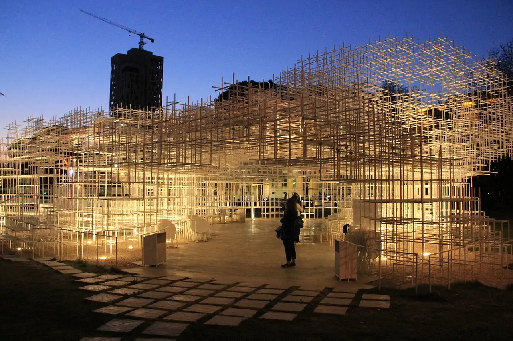
Instalacioni "Reja" e artistit japonez Sou Fujimoto eshte veper monumentale dhe nje hapesire moderne per jeten kulturore ne Tirane. Pavioni eshte nje strukture delikate 3D. Secila njesi perbehet nga shufra te holla celiku ne drejtkendesha. Struktura formon nje thurje te crregullt e gjysme te tejdukshme.
ADRESA:BULEVARDI"DESHMORET E KOMBIT", PERBALLE GALERISE SE ARTEVE TIRANE
Per me shume
~ Kalaja e Tiranes ~
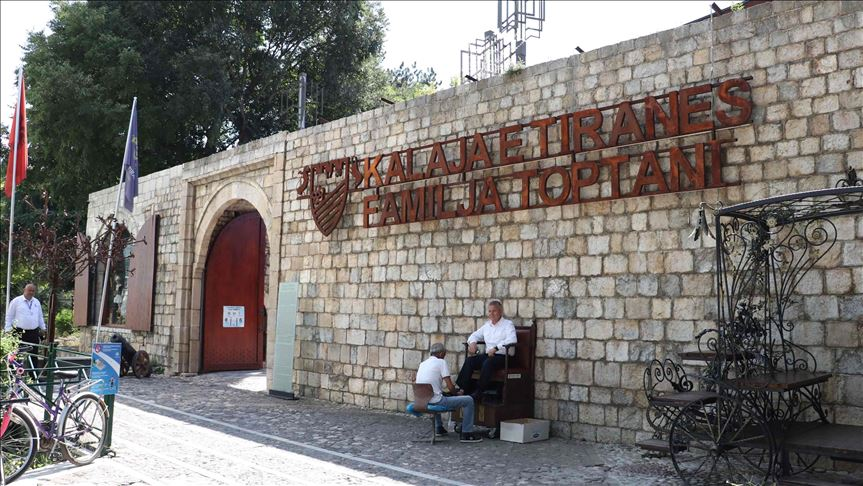
Kjo kala ndodhet në qendrën historike të qytetit të Tiranës, në një nga zonat më të frekuentuara të tij. Ajo përfaqëson një fortifikim fushor me planimetri drejtkëndore 160 x 120m me pjesën më të gjatë lindje – perëndim.Gjatë gërmimeve të kryera në vitet 2001 dhe 2008 mendohet se kalaja i përket njërit prej fortifikimeve të ndërtuara ose të rindërtuara nga Perandori Justinian në Epirin e Ri (provincë e Durrësit) në shek. IV – VI të erës sonë. Një pjesë e mureve rrethuese që shihen sot mbi tokë i takojnë ndërtimeve të shekujve të fundit, të cilat janë ndërtuar nga Ahmet Pashë Bargjini në gjysmën e dytë të shek. XVIII mbi rrënojat e kalasë së vjetër. Në vitin 1798 ra në duart e familjes Toptani nga Kruja. Gjatë kësaj periudhe kalaja u shndërrua në objekt të luftës shumëvjeçare të zhvilluar midis Toptanasve dhe sunduesve Bushatllinj të Shkodrës.Në vitin 1817 ajo përjetoi një rrethim pesë mujor, i cili pati pasoja të rënda jo vetëm për kalanë por edhe për një pjesë të madhe të qytetit. Pas bombardimit u rindërtua pjesërisht nga Toptanasit por nuk pati jetë të gjatë sepse në vitin 1832 ajo u shemb me urdhër të Vezirit të Madh, Mehmet Reshit Pasha, i cili urdhëroi prishjen e të gjitha kalave. Sot ruhet një pjesë e murit verior dhe trakte në anën jugore të saj, e cila ndërthuret këndshëm me infrastrukturën përreth. Brenda mureve të kalasë së Tiranës është krijuar së fundmi një zonë e re pedonale, e shndërruar në një hapësirë rekreative për kryeqytetin. Kjo hapësirë shërben si një mjedis ku promovohen artizanët dhe traditat lokale, kulinaria dhe arti i Tiranës.
ADRESA:Shetitorja Murat Toptani
~ Sheshi Skenderbej ~
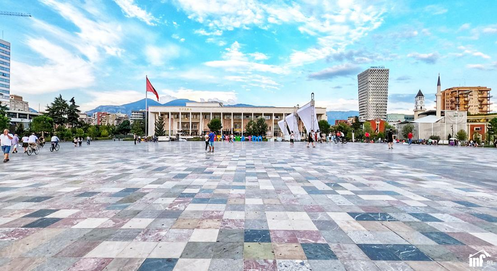
Sheshi “Skënderbej” e ka marrë emërtimin më 26 nëntor 1937. Ai ishte konceptuar në formë rrethore dhe me një shatërvan rrethor në mes, kurse ndërtesa që dominonte ishte Bashkia e vjetër e cila u prish në vitin 1980. Ky shesh qarkohej nga ndërtimet e traditës: Pazari i Vjetër, Kulla e Sahatit, Xhamia e Et’hem Beut, Kisha e Ungjillëzimit (e cila u prish me vonë), etj. Sheshi Skënderbej u rihap në 10 Qershor 2017, pas një restaurimi të madh. Sheshi është kthyer në një pedonale gjigande, më e madhja në Ballkan. Elementet e reja të sheshit janë: afërsisht 28 000 metra katror janë shtruar me pllaka nga të gjitha trevat e shqipërisë. Sheshi i shtruar me pllaka guri ka formën e një piramide te cekët, ku pika më e lartë ndodhet në mes me 1.80 metra lartësi. Ideja e kësaj është se: gjithësecili mund të qëndroj këtu dhe të ndihet i rëndësishëm. Dhe të gjithë gurët që janë marrë nga të gjitha trevat shqiptare simbolizojnë bashkimin e të gjithë shqiptarëve. Sheshi ka më shumë se 100 shatërvane me ujë të ftohtë për ta mbajtur vendin të freskët gjatë verës. Sheshi Skënderbej, Teatri i Operas dhe Baletit, Muzeu Kombëtar dhe Banka Kombëtare rrethojnë sheshin e shtruar me gurë, ndërsa pas këtyre ndërtesave janë mbjellur pemë të marra nga të gjitha territoret e Shqipërisë. Parqe të vogla, stola, lule, platforma për të bërë foto dhe një altar për martesa këto të gjitha ndodhen në shesh. 32 metra katror janë mbjellë me pemë të ndryshme aromatike dhe 90 000 metra katror është pedonale, ndërsa parkingu nëntokësor ka hapësirë për 300 makina.
~ Stadiumi Air Albania ~
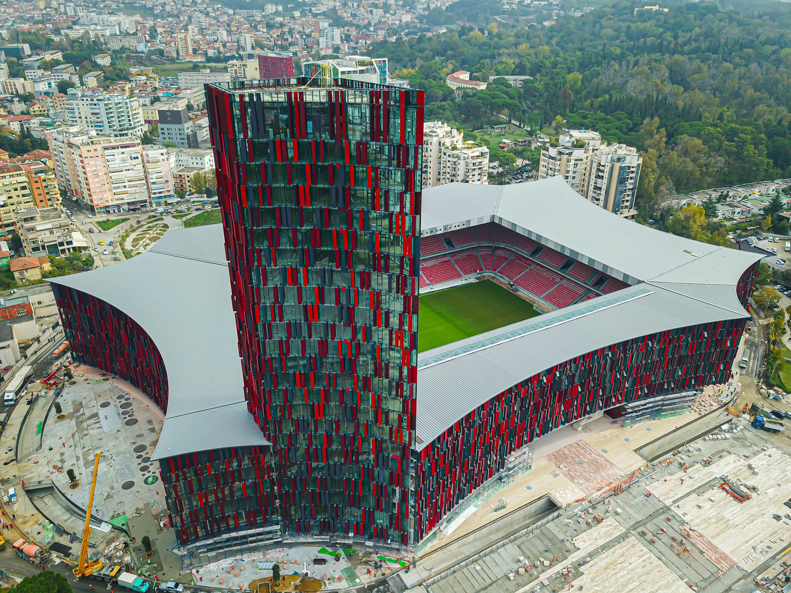
Arena Kombëtare njohur si Stadiumi “Air Albania” është ndërtuar në vendin e ish Stadiumit “Qemal Stafa”. Ai ka një kapacitet prej 22.500 vendesh që e bën stadiumin më të madh në Shqipëri. Stadiumi origjinal, i konceptuar nga arkitekti italian Gherardo Bozio në vitet 1939- 41, u ndërtua në formën e një stadiumi olimpik. Bosio parashikoi për ndërtesën një hyrje monumentale, me shkallë të gjera e relieve skulpturore. Gurin e parë për ndërtimin e stadiumit e ka vendosur në mënyre simbolike Galeazzo Ciano, ministri i jashtëm fashist i Italisë dhe njëkohësisht dhëndëri i Benito Musolinit, në gusht 1939. Punimet për ndërtimin e stadiumit vazhduan katër vjet deri në ndërprerjen e tyre në vitin 1943, kur kapitulloi Italia. Gjatë okupimit nazist stadiumi u përdor nga forcat gjermane si parkim për automjetet e tyre. Punimet për ndërtimin e stadiumit u përfunduan pas Luftës II Botërore. Stadiumi “Air Albania” i projektuar nga Marco Casamonti i Studios “Archea Associati”, përfaqëson një strukturë me formë të veçantë shumëfaqëshe (tetë-këndor) në mënyrë që secila palë të lejojë hyrjen në pjesët e tjera të ndara. Në një cep të strukturës së stadiumit ndodhet një kullë e gjatë 112 metra (24 kate), e cila aktualisht është kulla më e lartë në Shqipëri.
~ Parku i Liqenit Artificial ~
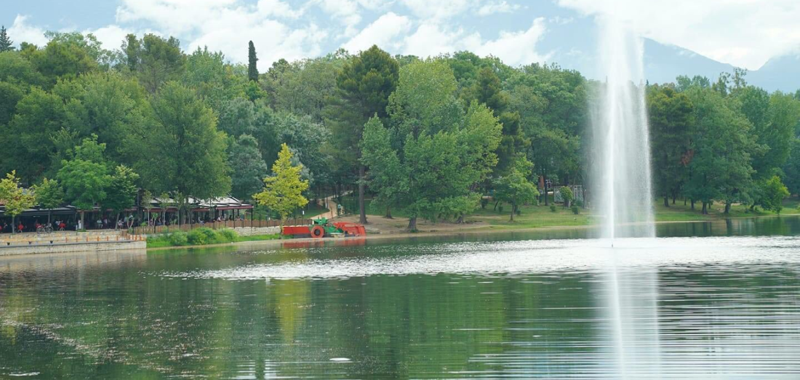
Parku i Madh i Liqenit Artificial përbën masivin më të madh të gjelbërimit në qytetin e Tiranës. Nga pikëpamja funksionale zgjidh deri në një farë mase nevojat e popullsisë për pushim dhe argëtim, lëvizje të lirë dhe vrapime në natyrë për të gjitha moshat. Sipërfaqja e Parkut të Madh përbëhet nga një masiv kodrinor me shpate me pjerrësi të vogël. Në pjesën jugore formohet pasqyra ujore e Liqenit Artificial që me shtrirjen e tij krijon gjire e gadishuj të vegjël shumë piktoreske. Parku i Madh i Liqenit filloi të ndërtohet në vitet 50-të. Në vitin 1955 u krijua liqeni artificial nga ujërat përreth si dhe u ndërtua me punë vullnetare një digë 400 m e gjatë e cila i pengon ujërat të vërshojnë drejt Tiranës. Në vitin 1957 – 1958 filloi mbjellja e bimësisë dekorative, si dhe ndërtimi i infrastrukturës së parkut. Ky park publik në jug të Tiranës përfshin liqenin artificial dhe disa pika atraktive si Kishën e Shën Prokopit, memorialet e disa personaliteteve të njohura shqiptare, etj. Në brendësi të tij gjenden varret e ushtarëve britanikë dhe atyre gjermanë të rënë gjatë Luftës së Dytë Botërore si dhe Mauzoleu i Familjes Mbretërore Shqiptare ndërtuar në vitin 2012. Parku dhe liqeni artificial mbeten një nga zonat më të frekuentuara të kryeqytetit. Parku i Madh quhet ndryshe edhe mushkëria e qytetit për shkak të bimëve të shumta, mbi 120 lloje pemësh, shkurresh dhe lulesh. Në Park ndodhen dhe disa lloje shpendësh si: Bilbili gushëkuq, Bilbili këngëtar, Bufi, Harabeli i gurëve, Shapka e vogël e ujit, Dallëndyshja e zakonshme, Gardalina, etj. Ndër kafshët mund të përmenden: Breshka, hardhuca, disa lloje gjarpërinjsh, kërmilli, dhe mjaft insekte që rriten nën tokë dhe mbi tokë. Sipërfaqja aktuale e Parkut të Liqenit Artificial është 156.9 ha, ndërsa ajo e Liqenit Artificial është 4.5 ha.
~ BUNK'ART ~
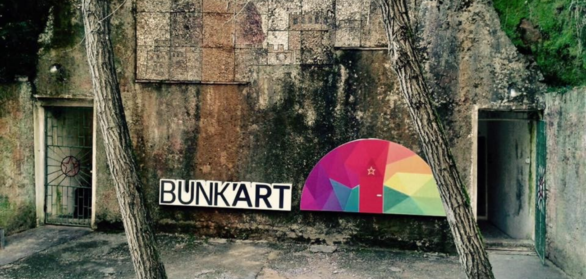
Projekti “BUNK’ART” ka filluar në nëntor të vitit 2014, me hapjen për publikun të BUNK’ART 1, ekspozita video muzeale e ngritur brenda bunkerit atomike të diktatorit Enver Hoxha në periferi të Tiranës dhe vazhdoi me hapjen në 19 nëntor 2016 të BUNK’ART 2 në qendër të kryeqytetit. Ndërkohë që BUNK’ART 1 i dedikohet historisë së ushtrisë shqiptare komuniste dhe jetës së përditshme të shqiptarëve gjatë viteve të regjimit, BUNK’ART 2 rindërton historinë e Ministrisë së Brendshme në Shqipëri nga viti 1912 në vitin 1991 dhe zbulon sekretet e Sigurimit, policia politike që ishte armë e ashpër persekutimi e përdorur nga regjimi i Enver Hoxhës. Ideator dhe kurator i përgjithshëm i projektit BUNK’ART është gazetari italian Carlo Bollino, ndërsa stafi i kërkimeve historike udhëhiqet nga gazetarja Admirina Peçi. Projekti BUNK’ART është mbështetur nga OJF shqiptare “Qendra Ura”.
ADRESA: Rr.Fadil Deliu
Orari:
E Hënë – E Diel: 09:00 -17:00
~ Kalaja e Petreles ~
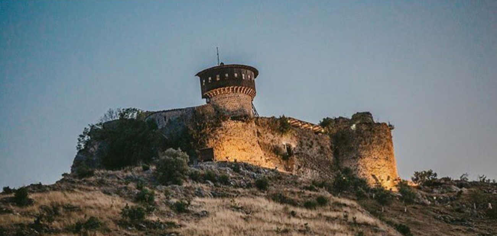
Kalaja e Petrelës është një kala fantastike e vjetër që ndodhet vetëm 17 km larg Tiranës. Kalaja e Petrelës ka një histori të pasur që daton në shekullin 6, para Krishtit. Por dhe pse është ndërtuar në kohët e lashta, kjo ndërtesë që është sot e ka historinë në shekullin e 15.Gjatë luftrave të Skënderbeut kundër otomanëve, Kalaja e Petrelës u vu nën komandën e Mamica Kastriotit, motrës së Skënderbeut. Sot ka restorant në kështjellë që është shumë i frekuentuar. Kështjella ofron një pamje spektakolare të Luginës së Erzenit, kodrave, ullinjve dhe maleve përreth.
~ Parku Rinia ~
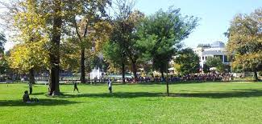
“Parku Rinia” është parku publik qendror i kryeqytetit, konceptuar në 1931 dhe ndërtuar në vitin 1949, që mbulon një sipërfaqe prej 29.81 ha. Për qendrën e Tiranës u hartuan disa variante projektesh, të cilat pavarësisht nga ndryshimet që pësuan deri në realizim, kishin në bosht aksin e bulevardit ku kryqëzoheshin të gjitha rrugët e qytetit, vend që asokohe ishte hapësirë e zbrazët. Projekti i parë nis që në 1923, por varianti më i suksesshmëm, në përshtatje me ambiciet e Mbretit Zog për ta bërë Tiranën një qytet modern europian, daton në 1931 dhe mban firmën e arkitektëve italianë Brasini dhe De Fausto. Ky park gjatë dyzet viteve të parë është parë si një hapësirë relativisht e lirë për të rinjtë e Tiranës, si dhe zonë e gjelbër për familjet dhe fëmijët. Më vonë aty u ndërtua një kompleks kafene dhe restorante, duke e quajtur me ironi “Taiwan”. Sot Parku Rinia ka një sipërfaqe prej 29.81 ha me hapësira të gjelbra, edhe një reliev të ndryshëm në sipërfaqe të caktuara, çka shërben jo vetëm si një mur akustik, por nxit edhe aktivitete fizike për fëmijët. Krahas një hapësire të veçantë që i është dedikuar atyre që dëshirojnë të luajnë me katërputroshët, janë krijuar mini-sheshe për fëmijë e të moshuar.
ADRESA: Bulevardi "Deshmoret e Kombit"
~ Mozaiku i Tiranes ~
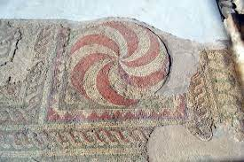
Mozaiku i Tiranës është një pikë shumë e rëndësishme referimi në Shqipëri dhe mendohet të ketë qenë pjesë e një banese të tipit rural (vila rustica) të ndërtuar në shekullin I pas Krishtit. Në shek. III pas Krishtit vendbanimi mendohet se u zëvendësua nga një kompleks godinash, të ndara në dy pjesë në pars urbana (pjesa për banim e vilës) dhe në pars rusticae (pjesa prodhuese e vilës) të cilat po ashtu kishin funksion bujqësor. Më vonë në shek. IV-V pas Krishtit vendin e vilës romane duhet ta ketë zënë një kishë paleokristiane. Kisha është ndërtuar në sallën qendrore të banesës rurale. Si të gjitha kishat e kësaj periudhe (gjysma e dytë e shek. IV pas Krishtit) edhe këtu kemi një riorganizim të ambienteve të brendshme. Brendësia ka tashmë një aks gjatësor dinamik pikërisht si rezultat i hyrjes përballë altarit, që theksohet nga ritmi i arkadave. Arkitektura e kishës është e thjeshtë. Gjatë transformimit të banesës në objekt kulti janë përdorur tulla, me simbole kryqesh, të datuara këto në periudhën e Perandorit Kostandin I (306-337). Ambientet ndihmëse në anën veriore të ndërtesës janë përshtatur nga ato të banesës. Mozaiku përmban motive gjeometrike e floreale por edhe motive tipike të Krishtërimit të hershëm, si gërsheti i stilizuar, rozetat e peshqit. Vila Rustica dhe kisha paleokristiane të njohura ndryshe si Mozaiku i Tiranës, janë një shembull shumë domethënës i lashtësisë së këtij territori që u zbulua rastësisht në vitin 1972, gjatë ndërtimit të një blloku pallatesh.
ADRESA: Rruga Sander Prosi
~ Mali i Dajtit ~
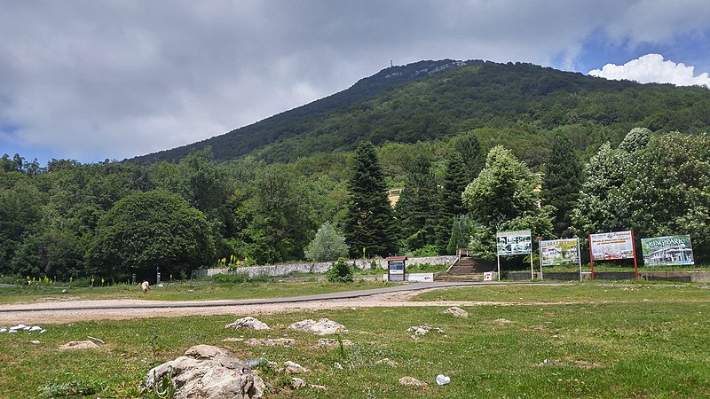
Mali i Dajtit është mali më i afërt me qytetin, vetëm 25 km në lindje të Tiranës (1611 metra i lartë). Një udhëtim atje, është një ndër aktivitetet më të preferuara turistike në Tiranë. Duhen 20 minuta me makinë ose autobus nga qendra e Tiranës deri te stacioni i Teleferikut. Më pas ju merrni Teleferikun për të përjetuar një aventure të mrekullueshme. Një udhëtim mbresëlënës dhe i këndshëm që ia vlen për pamjen që të ofron. Për 13 minutash udhëtim ju mund të ngjiteni në majën e malit nga ku do të shihni një pamje panoramike të qytetit, fshatra, pyje, bunkerë, shtëpi dhe gjithë rrethinat. Është një vend perfekt për t’u relaksuar dhe për të thithur ajër të pastër dhe larg zhurmave të Tiranës. Ju mund të shkoni në restorante, të shijoni ushqimin e shijshëm, ose të qëndroni në park të bëni një piknik me miqtë apo familjarët. Ky park është atraktiv gjatë gjithë stinëve, por kryesisht në verë, për freskine që ofron dhe në dimër kur Mali mbulohet nga bora.